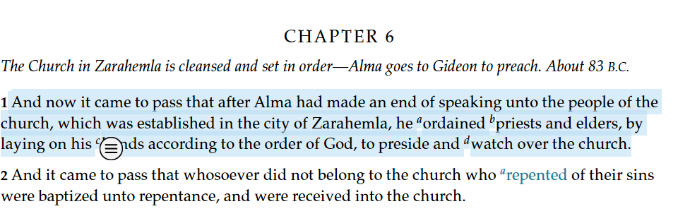
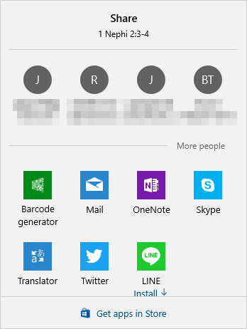
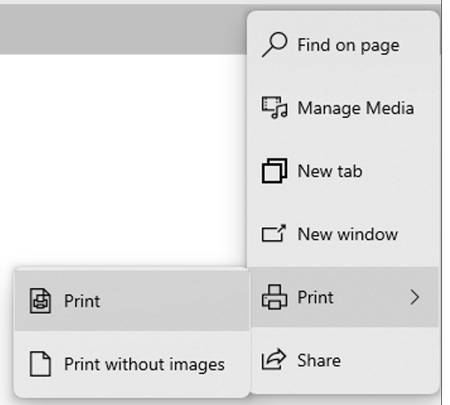
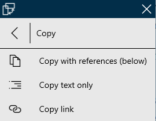
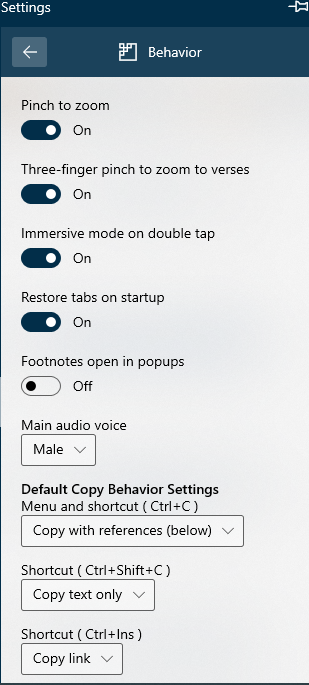
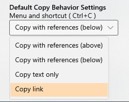

How Do I Share or Print - Silent Video
How Do I Share or Print - Silent Video How Do I Share or Print - Silent Video
Gospel Library has sharing, printing and copying capabilities. Any highlighted selection can be shared or copied. Whole chapters can be shared or printed.
To share a verse, paragraph, or several verses or paragraphs, select (highlight) what you wish to share.
Click on the small circle bubble ( ) to open the Context Menu.
) to open the Context Menu.
When the Context Menu (pictured below) appears, press the Share option ().

Pressing the Share button will open a list of your recent contacts and a list of applications that support sharing from Gospel Library for Windows. Once you've selected an application, be sure to follow any additional steps your choice needs for you to share what you've selected.
Material is shared with reference notations included.
Alternatively, you may share an entire chapter. Open to the desired chapter and do not select any text.
Press the More ( ) button at the right of the home ribbon and select share
) button at the right of the home ribbon and select share
To print a chapter, open to the desired chapter and do not select any text.
Press the More () button at the right of the home ribbon and select print
Here, you'll have the option to print the content with or without images.
At this time, notes, highlights, and other annotations are not printed with the content.
To copy a verse, paragraph, or several verses or paragraphs, select (highlight) what you wish to copy.
Click on the small circle bubble () to open the Context Menu.
When the Context Menu (pictured below) appears, press the Copy option.
The Context Menu gives you the option to copy the highlighted material Copies may be created to include references, text only or only links. If you wish to change the content of the copied material, click the arrow (>) to the right ot the Copy button and select an option from the list.
Advanced users may want to use custom shortcuts. To set custom shortcuts, go to the Settings, Behavior panel and set the Default Copy options. For each shortcut, click the down arrow and select an option from the list. The option selected for Ctrl+C will be the default for the program.
 